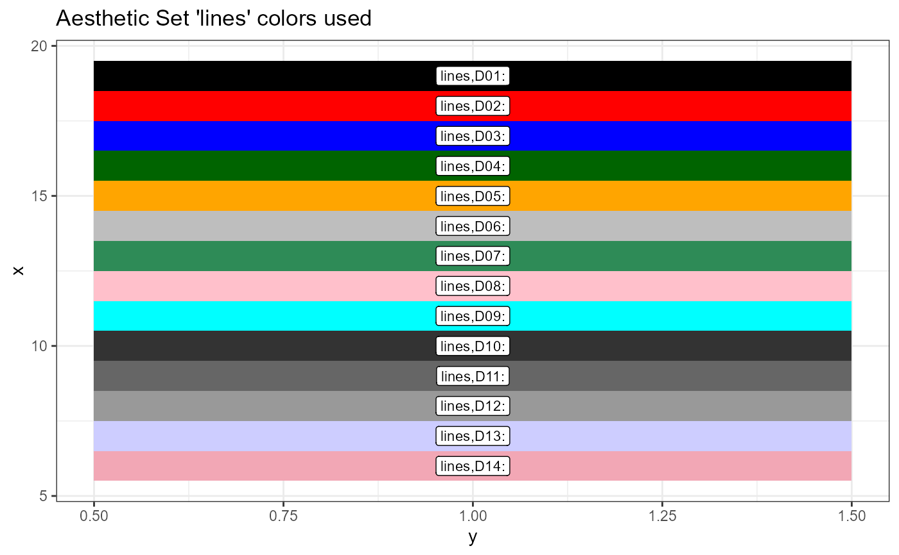

fg_get_aes() gets aethestic data.frame for use in graphs.
fg_get_aesstring() takes a column from the data.frame retrieved by fg_get_aes()
fg_print_aes_list() prints names of aesthetics used internally in FinanceGraph functions.
fg_display_colors() Shows a plot with current colors.
fg_get_aes(item = "", n_max = NA_integer_, asdataframe = FALSE)
fg_get_aesstring(
item = "",
n_max = NA_integer_,
toget = "value",
rtnifnotfound = FALSE
)
fg_display_colors(item = "")
fg_print_aes_list(grepstr = "")(Default: "") A grep string for categories desired.
Maximum number of rows or entries to return. Required for Rcolorbrewer color aesthetics
(Default: FALSE) Return dataframe of parameters regardless of type. (See details)
Column in the aes data.frame to paste together as a string.
Return NA_character_ if aes not found
narrow list of internal aesthetics sets to functions from grepstr
fg_get_aes() returns data.frame of aesthetics, including sorting columns, help strings, and values,
fg_get_aesstring() returns a list with just the character values of the requested aesthetic.
fg_print_aes_list() returns a markdown ready character vector of aesthetic names used in each function
fg_display_colors() returns a ggplot2::ggplot() object with colors and associated names for an aesthetic name
# Data set, String
head(fg_get_aes("lines"),3)
#> category variable type value const used helpstr
#> <char> <char> <char> <char> <char> <char> <char>
#> lines D01 color black all Low cardinality line colors
#> lines D02 color red all Low cardinality line colors
#> lines D03 color blue all Low cardinality line colors
fg_get_aesstring("lines")
#> [1] "black" "red" "blue" "darkgreen" "orange" "gray"
#> [7] "seagreen" "pink" "cyan" "grey20" "grey40" "grey60"
#> [13] "#cdcdff" "#f2a7b5"
# Gradient colors are stored in a `data.frame` as in a set of "Blue Greens"
fg_get_aes("espath_gp",asdataframe=TRUE)
#> category variable type value const used
#> <char> <char> <char> <char> <char> <char>
#> espath_gp colorrange seq,BuGn 7 fg_eventStudy
#> helpstr
#> <char>
#> Brewer colors if used
# To get the actual colors, we need to know how many:
fg_get_aes("espath_gp",n_max=8)
#> category variable type value const
#> <char> <char> <char> <char> <char>
#> espath_gp C1 color #005824 <NA>
#> espath_gp C2 color #137235 <NA>
#> espath_gp C3 color #248C46 <NA>
#> espath_gp C4 color #349E5F <NA>
#> espath_gp C5 color #43AF79 <NA>
#> espath_gp C6 color #57B990 <NA>
#> espath_gp C7 color #6BC4A7 <NA>
#> espath_gp C8 color #85CFBA <NA>
fg_display_colors("lines")
